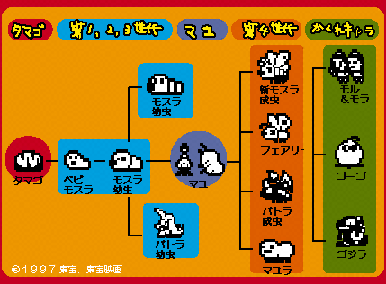

|
映画「モスラ2」を記念して発見されたモスラのたまごっち。 残念だけど今ではなかなか手に入れられないので 持っているアナタは大事にしてね！ |
|  |
| ●時計をセットし、5分たつとモスラの曲 とともに小美人が踊りだし、曲の終了と同時にたまごが割れます。 |
| ●第3世代から第4世代のキャラに変身する際は 東京タワーにマユをはります。 |
| ●ごはんは、葉っぱ・りんご・肉・ケーキなどがあります。 |
| ●第4世代以降のキャラで平均寿命 をすぎて瀕死になった場合、最後の力を振り絞ってたまごを産みます。病気で死んだ場合は産みません。超かくしキャラを出すには、このたまごをまめに育てましょう。 |
| |
|
|
|
|
| Copyright (C) BANDAI CO.,LTD.1998 All Rights Reserved. | |